Detective Conan Science Investigation Exhibition – Taipei & Kaohsiung
Turning a Detective Story Into a Crowd-Flow Plan
The exhibition adapts a mystery in which a novel starring Kogoro Mouri is about to be published, only for its author to turn up dead at home with "14:00 Kogoro Mouri" written in his appointment book, making Mouri the prime suspect overnight. Visitors don't watch this story from the outside; they step into the crime scene and use forensic science to clear Mouri's name and find the real killer. We were responsible for turning this Japanese licensed IP exhibition into a physical build that worked within Taiwanese venue conditions, covering circulation planning, set reconstruction, interactive-device integration, and post-show teardown, across two venues in Taipei and Kaohsiung.
One Script, Two Buildings
The exhibition runs two staggered circulation tracks, a hardcore forensics route following Conan and Amuro, and a lighter deduction route following Conan and Ran, which naturally splits the crowd inside the venue. A three-stage narrative circulation, crime scene investigation, clue exploration, science lab, uses wall transitions and pacing to make visitors feel the case advancing as they move through the space.
Wall structures for the crime scene, the Mouri Detective Agency, and the Poirot Cafe were all cross-checked against footage and panels from the original anime and manga beforehand, matching scene proportions, furniture placement, signage typography, and color tone so the physical rooms held up against what visitors remembered from the screen.
Because Taipei and Kaohsiung differ in scale, we redesigned the wall templates and scene-transition circulation for each venue while keeping the same level of research fidelity, so the same IP scenes could deliver a consistent experience in two different buildings.
Queuing Had to Be Designed Too
The biggest risk to an immersive exhibition usually isn't weak content, it's crowds locking up at a single point. We mapped the known bottlenecks ahead of time: the ticketing counter and QR-code redemption point at the entrance, the audio-guide rental counter, the first crime-scene set (a high-density photo spot right at entry), the forensic devices in the science lab zone, the manuscript gallery, and the gift shop near the exit. Any one of these could form a long queue during peak hours.
The manuscript gallery bans photography and sees low interaction but long dwell times, so we placed it near the end of the route and widened its corridor to keep it from backing up the flow behind it. For the other hotspots, we used different weekday and weekend opening hours to spread crowds across time. The dual-route booklet system itself worked as a natural flow-splitter, with entrance guidance adjusted dynamically according to real-time crowd data on each route. The forensic-device zones used multi-station parallel setups, with two or more workstations each for fingerprint and handwriting analysis, cutting down dwell time at any single point.
Corridor widths at key scene nodes were calculated directly, working backward from maximum simultaneous occupancy multiplied by average dwell time in seconds, with buffer zones placed behind major photo spots so photo-taking wouldn't back up the flow behind it. A physical partition and separate checkout line ran between the gift shop and the paid exhibition zone, so free-entry foot traffic and paying visitors were counted separately, reducing the impact of end-of-route congestion on overall evacuation.
During summer peak season, electronic displays at the ticketing area showed real-time wait estimates, and additional staff enforced capacity control at each zone's entrance, so exhibition quality and safe evacuation held at the same time.
Four Forensic Devices
Voiceprint analysis, handwriting analysis, fingerprint analysis, and blood analysis each run as an independent interactive device, chained together into one complete line of evidence, so solving the mystery is a layered accumulation of deduction rather than a single guess.
The detective's notebook works as the core puzzle tool rather than a souvenir, guiding visitors to record clues on site, cross-reference witness statements, and verify their conclusions in the science lab zone, turning wall-panel reading into active evidence-gathering. The mystery resolves on a single sheet of paper revealing the truth of the case, and the closing zone uses reinforced lighting and sound to make that reveal the emotional high point of the experience.
After Closing
Once the exhibition ended, we tore down the set walls, props, and electrical wiring and returned the site to venue management. After the Taipei teardown, some reusable components were packaged, transported, and refurbished for direct use at the Kaohsiung venue, so the same precisely calculated exhibition logic didn't need to be recalculated from zero for the second city.
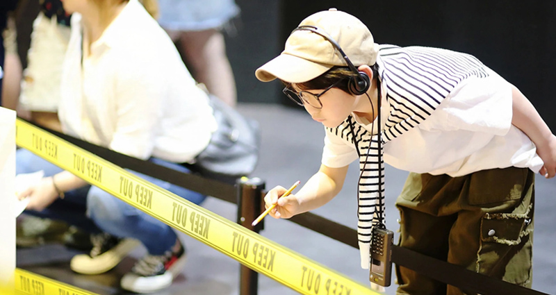
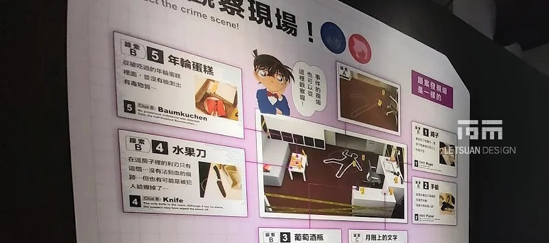
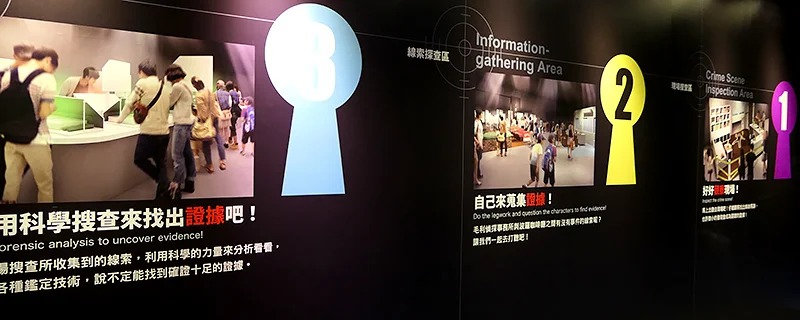
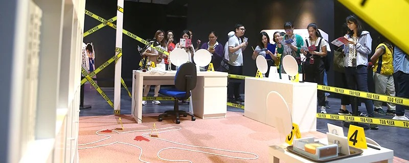
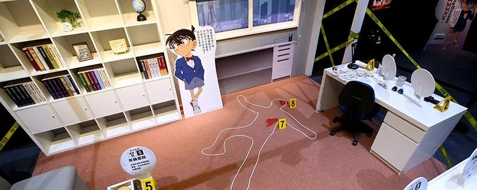
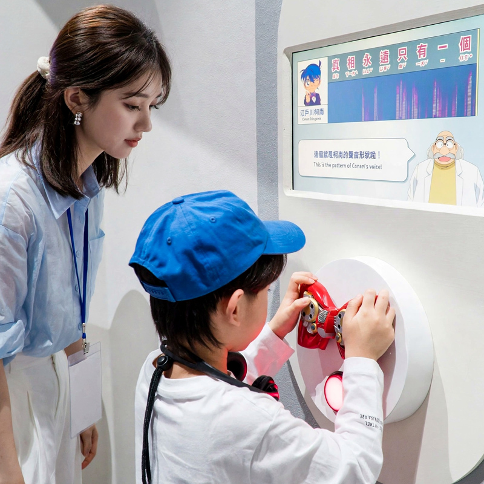
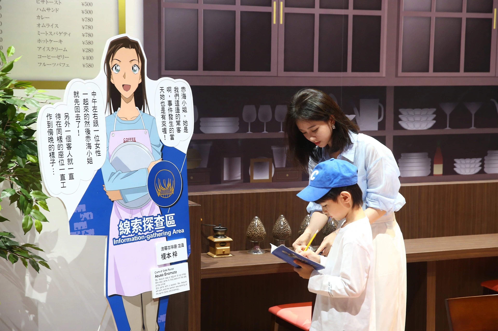
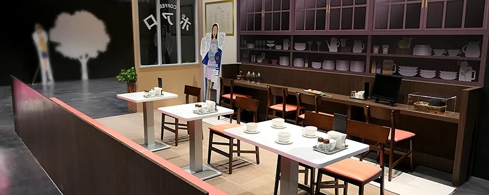
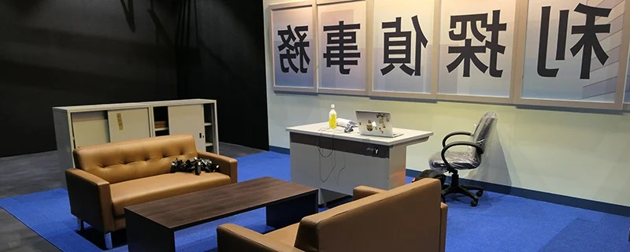
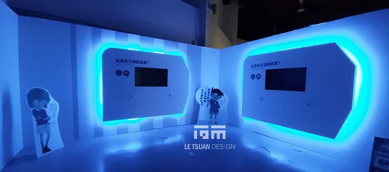
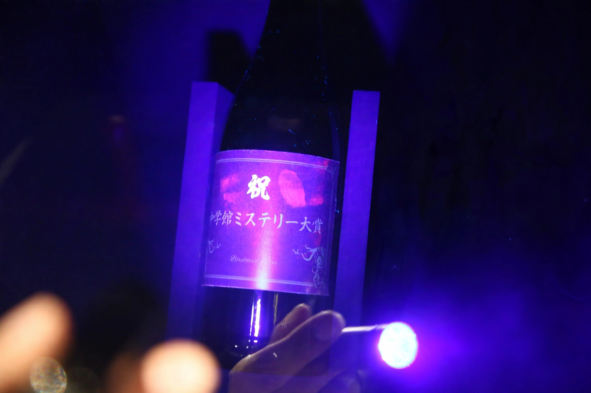
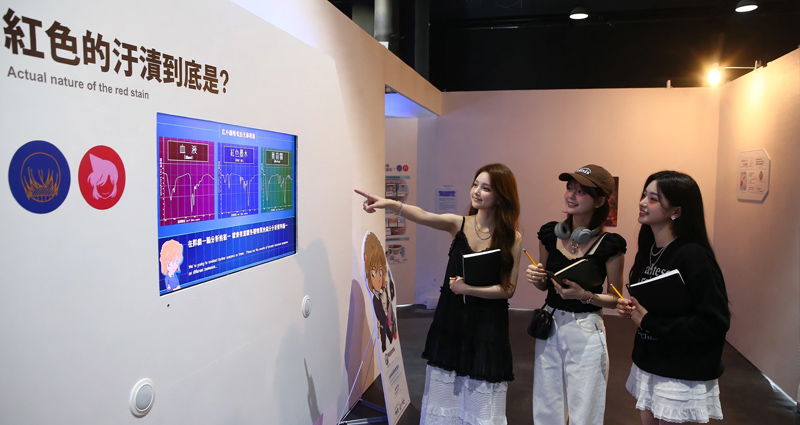
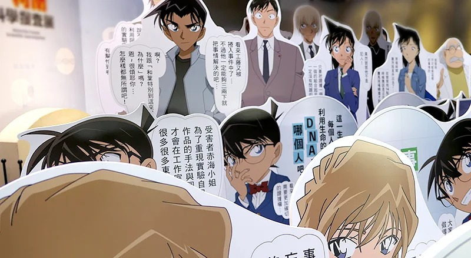
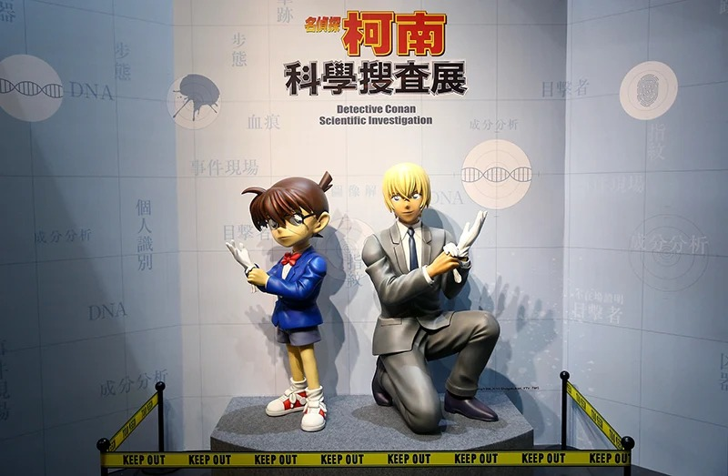
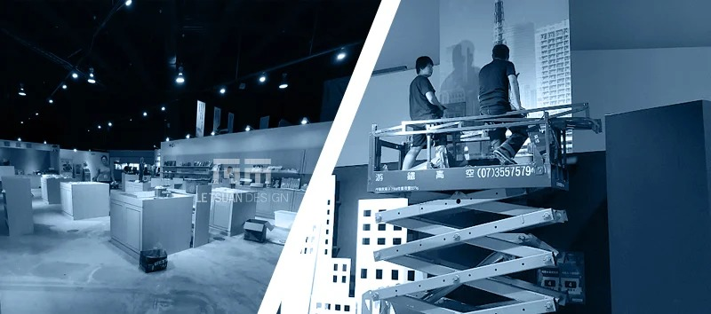
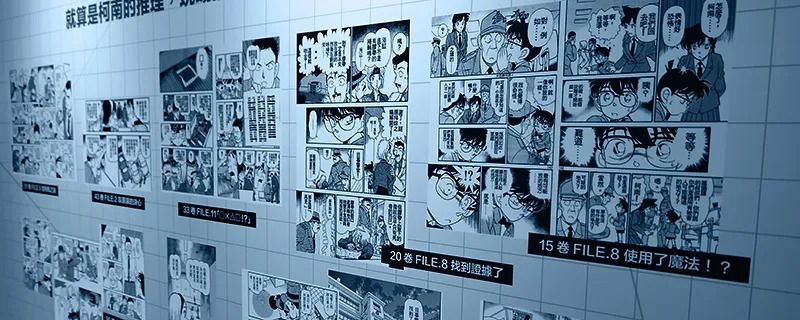
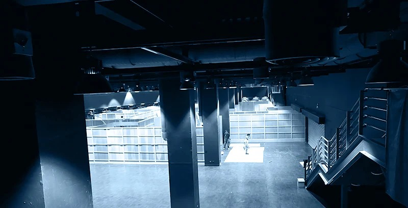
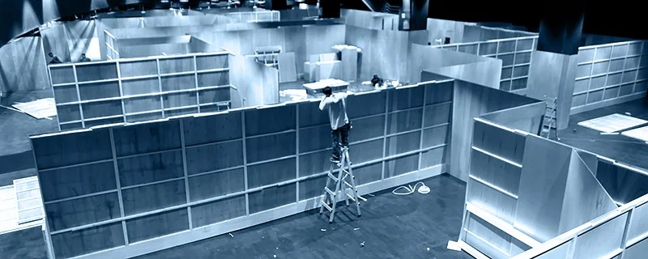
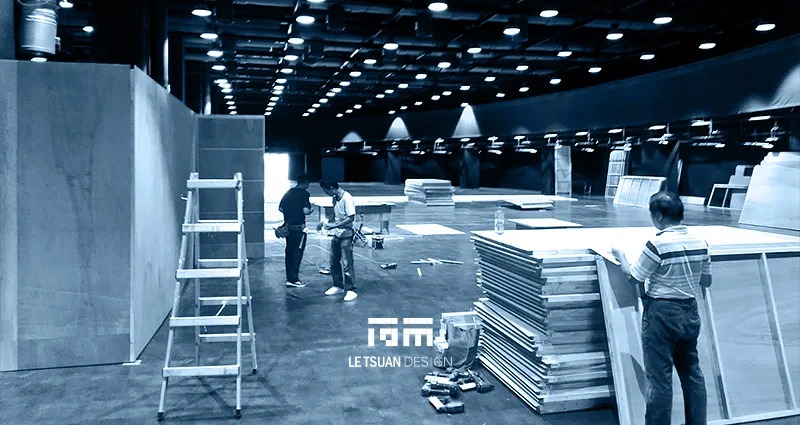
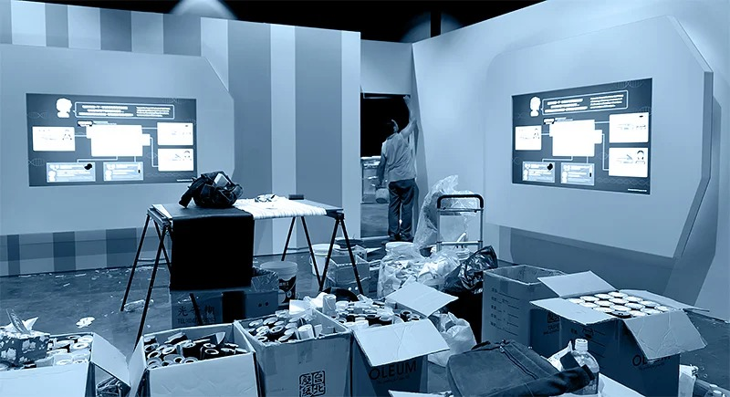